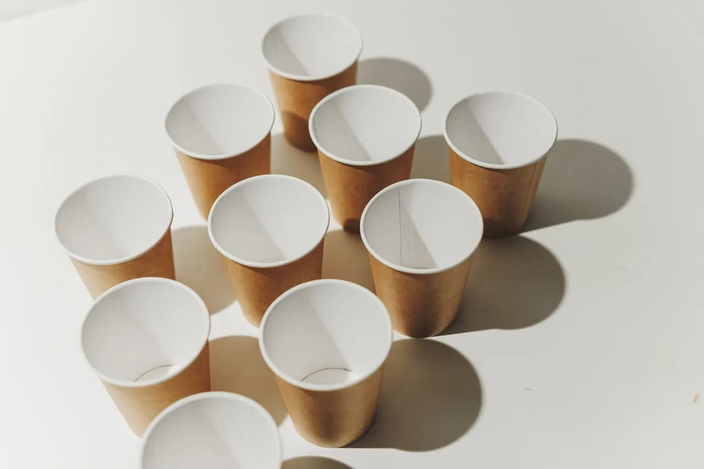
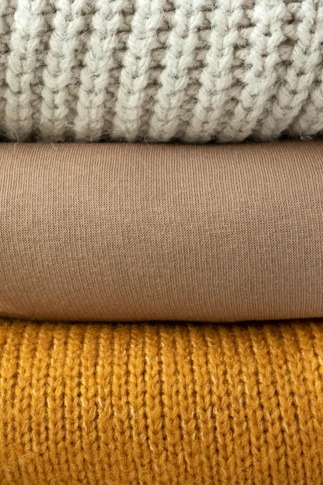

Since 1927
株式会社ロークスカレー本舗（カレー製造）
1927年（昭和2年）創業。およそ100年受け継がれてきたカレーの味と製造を、いまも継続中です。古いものを守るのではなく、古いものに新しい役割を与える——その原点です。
後継者がいない。会社を譲りたい。けれど、社員と歴史は守りたい——そのご相談を、承継の当事者がうかがいます。
リブメーカーズは、愛知の会社を直接承継する持株会社です。仲介会社ではないため、当社にお支払いいただく仲介手数料は発生しません。1927年創業のカレー製造をはじめ10社の承継・統合実績があり、ご相談は無料・秘密厳守、3営業日以内にご返信します。
愛知には、確かな技術と誠実な商いを続けてきた会社が数多くあります。けれど「後継者不在」を理由に、その歩みが途切れてしまうことがあります。私たちは2007年に愛知・小牧で創業し、後継者を必要とする会社を「買収」ではなく「承継」として受け継いできました。受け継ぐのは帳簿ではなく、現場の誇りと、お客さまとの関係。社名も、味も、働く人も、できる限りそのままに、次の世代へつなぎます。
私たちは仲介者ではなく、受け継いだ会社をグループの一員として経営し続けている当事者です。その一部をご紹介します。全体はグループ10社の承継実例をご覧ください。
1927年（昭和2年）創業。およそ100年受け継がれてきたカレーの味と製造を、いまも継続中です。古いものを守るのではなく、古いものに新しい役割を与える——その原点です。

2024年に承継。承継後はプラスチックから紙へ、脱プラ製品の展開を進め、環境にやさしいものづくりへと事業を育てています。

2025年に承継。FSC®認証の紙資材という強みを維持したまま、ブランドの世界観を支える紙のパートナーとして事業を続けています。

2026年に承継。創業60年超の機能性肌着づくりの技術を、働く人の雇用とともに受け継ぎ、これからの暮らしへ届けています。
「会社を譲りたい」と思ったとき、多くの方がまず仲介会社を思い浮かべます。私たちはそのどちらでもない、会社を引き継ぐ当事者です。
※ 株式譲渡等の手続きにあたり、税務・法務などの専門家費用が別途必要になる場合があります。詳細はご相談時にご説明します。
私たちの承継は「成約して終わり」ではありません。出会いから再成長まで、ひとつの輪としてつながっています。
無料・秘密厳守でお話をうかがいます。業種・地域・お悩みなど、差し支えない範囲で結構です。3営業日以内にご返信します。
数字より先に、人と歴史に向き合います。社員の雇用、現場の技術、お客さまとの関係をどう受け継ぐかを一緒に決めます。
小売・製造・商社・紙・食・不動産。グループ10社の知恵と販路を持ち寄り、一社では届かなかった打ち手を加えます。
承継して終わりにしない。EC・ブランド・脱プラなど、次の成長の種に知恵と人を注ぎ続けます。
あります。第三者への承継という選択肢です。リブメーカーズは愛知の会社を直接承継する持株会社で、1927年（昭和2年）創業のロークスカレー本舗をはじめ10社の事業を受け継ぎ、グループとして経営を続けています。ご相談は無料・秘密厳守です。
仲介会社は売り手と買い手をつなぐ第三者で、一般に成約時に仲介手数料が発生します。当社は仲介ではなく承継の当事者として、当社自身が会社を受け継ぎます。そのため当社にお支払いいただく仲介手数料はありません。
私たちは、雇用と現場の技術を次の世代へつなぐことを承継の目的としています。2024年承継のアートナップ、2025年承継のタナカ産業、2026年承継のヤマダでも、働く人とともに事業を続けています。
ご相談は無料です。秘密厳守でお取り扱いし、3営業日以内にご返信します。お急ぎの場合はお電話（0568-71-3201、平日9:00–18:00）でも承ります。
規模だけで線引きはしていません。地域の暮らしに必要とされてきた事業かどうかを大切に、一社ずつ向き合って判断しています。まずは差し支えない範囲で概要をお聞かせください。
本社は愛知県小牧市。名古屋をはじめ東海エリアの会社のご相談を、創業の地からうかがっています。「ここなら社員と歴史が守られる」——そう感じていただけるよう、まずはお話から。
お名前と会社の概要だけで結構です。守秘を最優先にお取り扱いします。